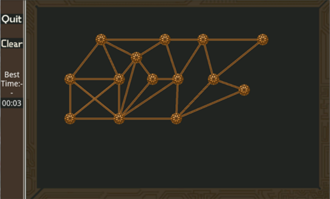

Power Path |
Despite the fact that computers can solve many problems very quickly, there are certain problems, called NP-complete, that cannot be solved in a reasonable amount of time by a computer for large input sizes.
One such problem is the Hamiltonian path problem. A Hamiltonian path consists of a path through a graph which visits every node in the graph exactly once.
Power Path is a game for Android devices in which players can attempt to find Hamiltonian paths in graphs of increasing complexity. When a path is found, the name of the user and the time it took for them to complete the path will be sent to a web page where we will be able to view the results.
Initial comparisons of a human player vs. a computer algorithm show that as the paths get larger, computers can take a very large amount of time to solve the problem, to the point where a human solving the problem is actually faster.
